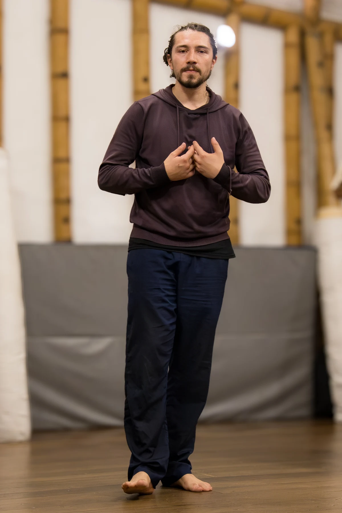
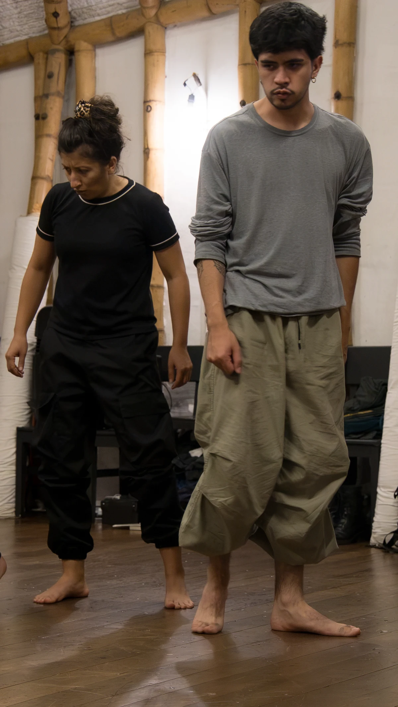
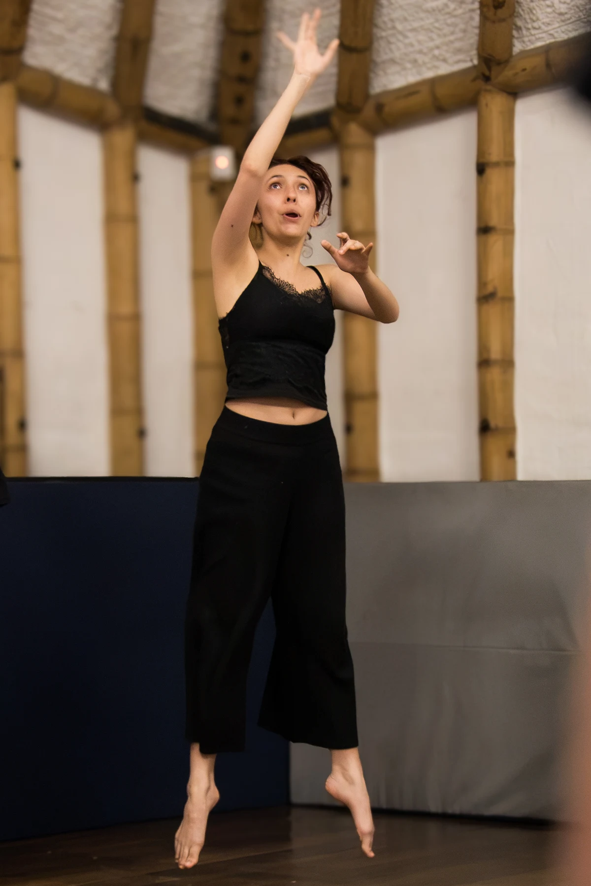
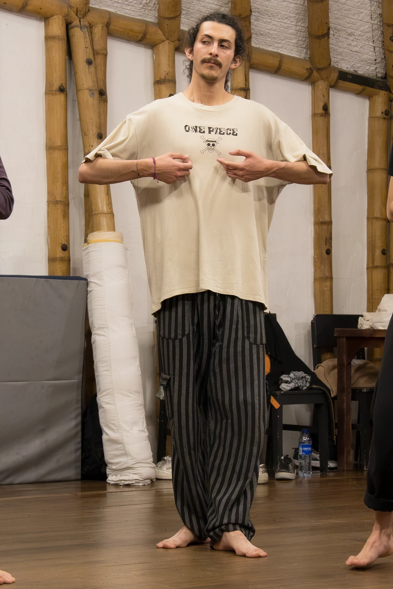

Talleres empresariales
Experiencias para equipos a partir de las herramientas de las artes escénicas.

Talleres a la medida
Partimos de las necesidades, preguntas y contexto de tu equipo para diseñar una experiencia con herramientas del teatro.
Escribir a La GrutaComunicación y escucha
Comunicamos con la manera de escuchar, ocupar el espacio, actuar y relacionarnos. Este taller propone una experiencia vivencial con herramientas del teatro, la voz, la improvisación y la creación colectiva.
Está dirigido también a personas sin formación artística y a equipos de trabajo. El recorrido invita a reconocer hábitos de interacción, ampliar los recursos de comunicación no verbal y explorar un liderazgo basado en la colaboración.
Tres encuentros para ponerlo en práctica.
Escucha y reconocimiento del otro
Atención, mirada, coordinación grupal e improvisación para resolver tareas colectivas. Escuchar con el cuerpo y construir sin depender solo de las palabras.
La intención cambia lo que hacemos
Una misma acción puede cuidar, invitar o generar confianza. Exploramos la relación entre intención, gesto y mensaje.
Liderazgo como práctica colaborativa
Conducir, seguir, cuidar y facilitar el trabajo de otras personas. Retos de improvisación y decisiones compartidas para ensayar un liderazgo flexible.
Formato propuesto: tres sesiones de dos horas, acompañadas por dos facilitadores. Diseñamos el proceso según las necesidades del equipo.
Conversemos sobre tu equipo
Trabajo en equipo
Una posibilidad para explorar la cooperación, la confianza y la construcción colectiva mediante experiencias teatrales diseñadas para el grupo.
Escribir a La Gruta
Creatividad y resolución de problemas
Podemos diseñar un encuentro de juego e improvisación para explorar alternativas, hacer preguntas y ensayar respuestas colectivas.
Escribir a La Gruta
Liderazgo y presencia
Una posibilidad para explorar la presencia, la iniciativa y la relación con el grupo desde el cuerpo, la voz y la acción teatral.
Escribir a La Gruta